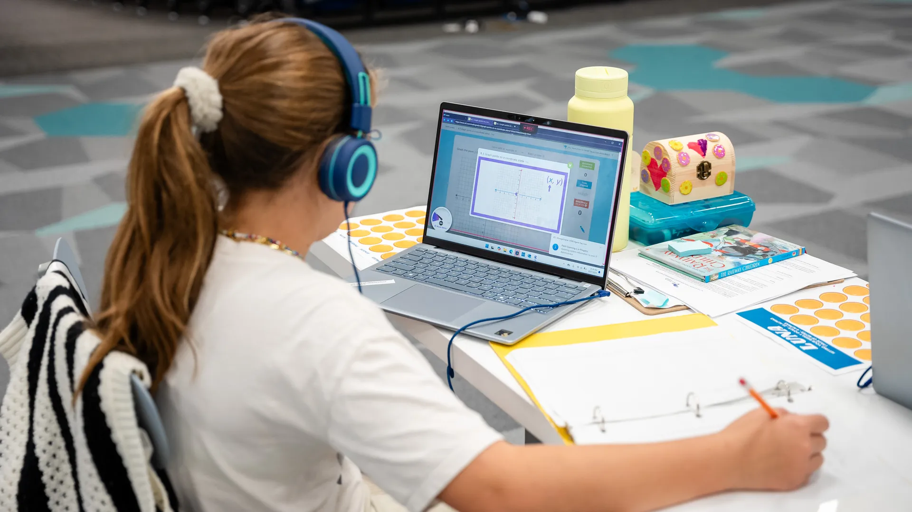

Fungerer studiesidene for alle?
Vi prøvde å ... i ... – uten mus. Noe tekst her som fenger

Mye av studiehverdagen foregår på skjermen: innleveringer, emnesider, timeplaner og beskjeder fra forelesere. Men ikke alle bruker mus. Noen navigerer med tastatur på grunn av en motorisk funksjonsnedsettelse, andre bruker skjermleser, og noen jobber rett og slett raskere slik. For dem må hvert steg i tjenesten kunne nås med tastene alene.
Derfor ga vi oss selv én konkret oppgave sammen med [navn på student], som studerer [studieprogram] ved Høgskolen i Østfold: Finn ut hva timeplanen din er. Regelen var enkel: ingen mus.
Slik testet vi
Testen ble gjennomført [dato] i [nettleser] på [PC/Mac]. Vi brukte Tab og Shift + Tab for å flytte oss, Enter og mellomrom for å trykke på lenker og knapper, og piltastene i menyer. For hvert steg noterte vi om vi kom videre, og om vi kunne se hvor på siden vi var.
- Logge inn: [Hva skjedde?]
- Finne riktig emne: [Hva skjedde?]
- Åpne innleveringen: [Hva skjedde?]
- Lese fristen: [Hva skjedde?]
Vi tok notater og skjermopptak underveis. Vi noterte også det som fungerte, ikke bare det som eventuelt gikk galt.
Hva testen viste
Her skriver vi hva vi fant
![[Beskriv skjermbildet]](bilder/skjermbilde.png)
– Sitat fra studenten, sier navnet til studenten.
Hva sier kravene?
Universiteter og høgskoler er omfattet av kravene til universell utforming i likestillings- og diskrimineringsloven. For nettsider er kravene beskrevet i forskrift om universell utforming av IKT-løsninger, som bygger på standarden WCAG. Ifølge Uu-tilsynet skal alt innhold og all funksjonalitet på en nettside kunne brukes med bare tastaturet.
– Sitat fra fagperson, sier navn, tittel og arbeidssted.
Navn, som er ansvarlig for tjenesten, har fått se funnene og sier: svar.